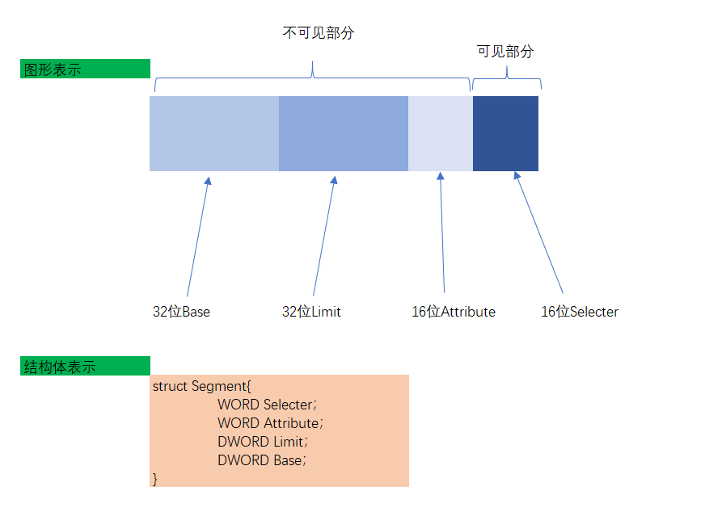
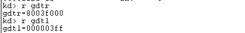
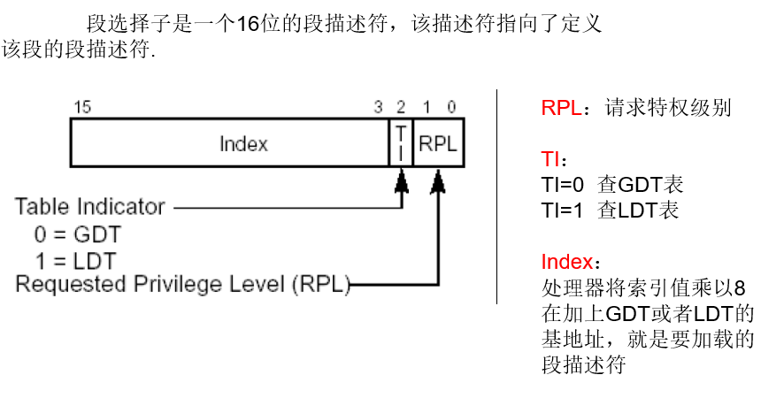
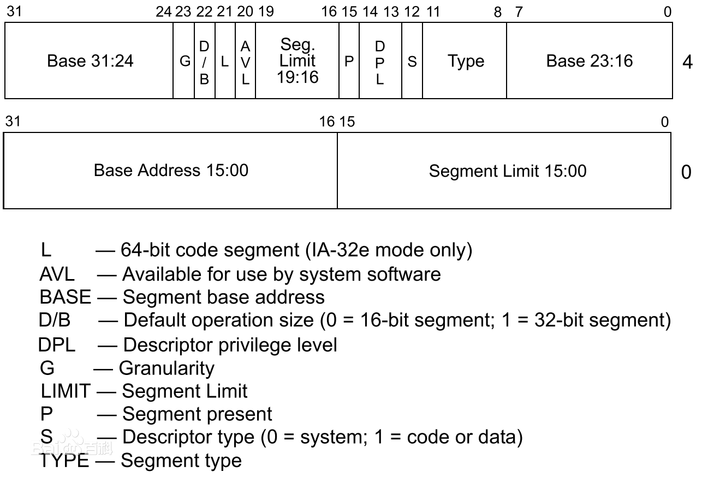
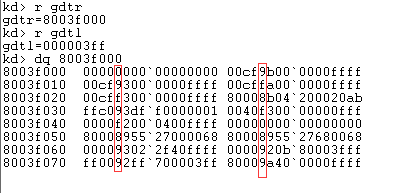
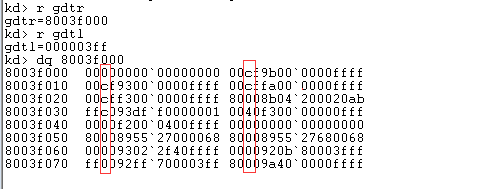
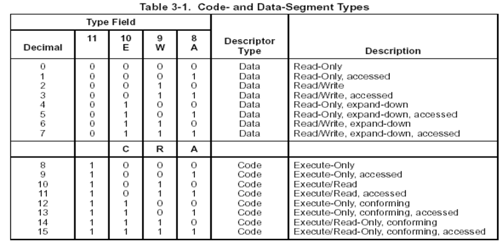
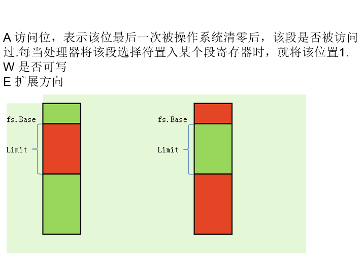
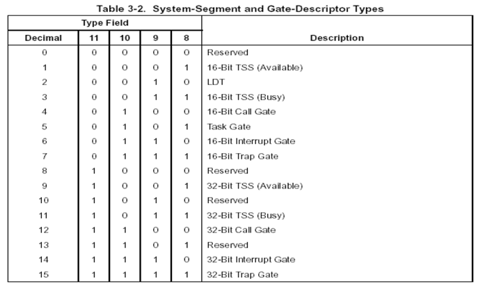
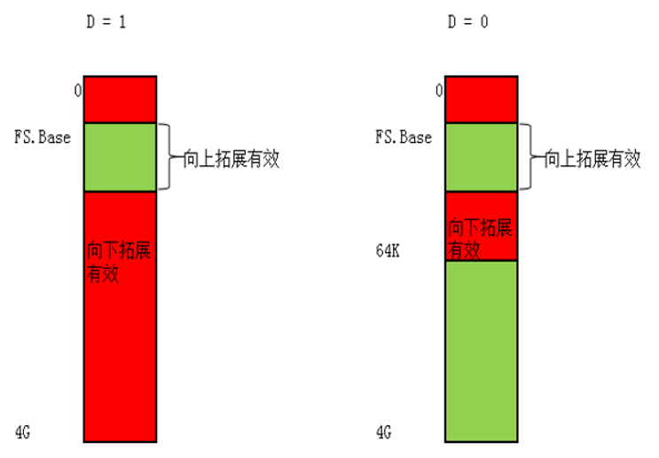

# 段寄存器
什么是段寄存器，有哪些段寄存器
当我们用汇编读写某一个地址时： mov dword ptr ds:[0x123456],eax
我们真正读写的地址是： ds.base + 0x123456ES CS SS DS FS GS LDTR TR 共 8 个
代码段寄存器 CS（Code Segment）
存放当前正在运行的程序代码所在段的段基址，表示当前使用的指令代码可以从该段寄存器指定的存储器段中取得，相应的偏移量则由 IP 提供。
数据段寄存器 DS（Data Segment）
指出当前程序使用的数据所存放段的最低地址，即存放数据段的段基址。
堆栈段寄存器 SS（Stack Segment）
指出当前堆栈的底部地址，即存放堆栈段的段基址。
附加段寄存器 ES（Extra Segment）
指出当前程序使用附加数据段的段基址，该段是串操作指令中目的串所在的段。
FS、GS 是从 80386 开始增加的，没有全称。
FS,GS 是 80386 起增加的两个辅助段寄存器，在这之前只有一个辅助段寄存器 ES, 增加这两个寄存器是为了减轻 ES 寄存器的负担，并能更好地配合适用于通用寄存器组的基址和变址寄存器。
寄存器 FS 和 GS 是段寄存器。它们没有处理器定义的目的，而是由操作系统运行它们来赋予目的。
附加段寄存器，F 为上一个附加段寄存器字母 E 后的字母，没有对应的名称
- FS
指向一种被称为线程信息块（TEB）的结构，这种结构是由内核在创建线程时创建的，用于支持操作系统相关功能、服务和 API
- GS
附加段寄存器，G 为上一个附加段寄存器字母 F 后的字母，没有对应的名称
在 32 位 Windows 上 GS 保留供将来使用
在 x64 模式下，FS 和 GS 段寄存器已交换
Win64 使用 GS 的原因是该 FS 寄存器用于 32 位兼容性层（称为 Wow64）
32 位应用程序永远不会导致 GS 更改，而 64 位应用程序永远不会导致 FS 更改
注意，在 Win64 和 Wow64 中 GS 是非零的，这可以用来检测一个 32 位应用程序是否在 64 位 Windows 中运行，在一个 “真正 “的 32 位 Windows 中 GS 总是零
# 段寄存器结构

段寄存器中有 16 位是可见部分，有 80 位是不可见部分，一共 96 位。
可见部分为 16 位的 Selector 部分
16 位的 Attribute 为这个段寄存器的属性，它的意义为：表示该段寄存器是可读还是可写还是可执行的。
32 位的 Base 表示该段是从哪里开始的。
32 位的 Limit 表示整个段的长度有多少。
# 段寄存器的读写
读段寄存器的时候只能够读 16 位。
比如： mov ax,es 只能读 16 位的可见部分
读写 LDTR 的指令为： SLDT/LLDT
读写 TR 的指令为： STR/LTR
写段寄存器的时候写的是 96 位。
比如： mov ds,ax 写时是写 96 位
# 加载段描述符至段寄存器
除了 MOV 指令，还可以使用 LES、LSS、LDS、LFS、LGS 指令修改段寄存器
例如：
char buffer[6]; | |
__asm{ | |
les ecx,fword ptr ds:[buffer] // 高 2 个字节给 es, 低四个字节给 ecx | |
} |
# 段寄存器属性简介
段寄存器 | Selector | Attribute | Base | Limit
GS 寄存器 Windows 并没有使用。
# GDT (全局描述符表) LDT (局部描述符表)
LDT 表在 Windows 中并没有使用。
当我们执行类似 mov ds,ax 指令时，CPU 会查表，根据 ax 的值来决定查找 GDT 还是 LDT , 查找表的什么位置，查出多少数据。gdtr 寄存器中存储了 GDT 表的起始地址和 gdt 表中的长度
gdtr 是 48 位的寄存器，其中 32 位存储的这张表的位置，16 位存储的这张表的大小。
在 windbg 中查看
r gdtr //gdt表的存储位置
r gdtl //gdt表的大小

每次从 GDT 表中查表：每 8 个字节为一个段描述符。
# 段选择子
段选择子是一个 16 位的段描述符，该描述符指向了定义该段的段描述符.
# 段选择子和段寄存器的对应关系
对应可见部分的 16 位既段寄存器中的 Selector。
# 段选择子的结构

RPL：请求特权级别
TI：TI=0 查 GDT 表；TI=1 查 LDT 表
Index：处理器将索引值乘以 8 在加上 GDT 或者 LDT 的基地址，就是要加载的段描述符
# 段描述符
# 段描述符的结构

16 位的 Attribute 对应段寄存器中高四字节从 8 位开始到第 23 位结束。
32 位的 Base 包含了三个部分：
- 高四字节的第 24 位到第 31 部分
- 高四字节的第 0 位到第 7 位
- 低四字节的第 16 位到 31 位
32 位的 Limit 包括两部分一共二十位（最大值为 FFFFF）：
- 高四字节的 16 位到 19 位
- 低四个字节的 0 位到 15 位
# 段描述符的属性
段寄存器的值是通过段描述符填写的，但段描述符只有 64 位，可是要填写的有 80 位，如何从 64 位变成 80 位呢？
# P 位
P 位 位于段描述符的高四个字节的第 15 位（下标为 15）的位置.
P = 1 段描述符有效
P = 0 段描述符无效
当使用指令将段描述符加载至段寄存器的时候，CPU 第一个检测的就是 P 位，当 P 位为 0 时就不做继续的检测了。

在段描述符中，只要看这一行的数是否小于 8，若小于 8，则证明 P 位 = 0 段描述符无效。
# G 位
G 位 位于段描述符的高四个字节的第 23 位（下标为 23）的位置。
G=0 的时候：表示 Limit 字段单位（粒度）是字节：最大值就是 limit 域。
G=1 的时候：表示 Limit 字段单位（粒度）是 4KB：最大值就是 limit 域 * 0x4K + 0xFFF。

在段描述符中，只要看这一行的数是否小于 8，若小于 8，则证明 G 位 = 0。
# S 位
S 位 位于段描述符的高四个字节的第 12 位（下标为 12）的位置。
S = 1 时表示： 代码段或者数据段描述符
S = 0 时表示： 系统段描述符
- 十六进制下，从右到左看高字节的第五位，若是偶数则 S 位 = 0，若是奇数则 S 位 = 1。
# type 域
type 域 包含段描述符的高四个字节的 8、9、10、11 共四位。

# 数据段
当 s 位为 1 且当 type 域中的 11 位为 0 时，表示是数据段。
其中图中的 A、W、E 分别代表不同的意思

E 位表示拓展位，为 0 表示向上拓展，为 1 表示向下拓展。
向上拓展：有效范围为 fs.Base ~ fs.Base+Limit
向下拓展：有效范围除了 fs.Base ~ fs.Base+Limit
# 代码段
当 s 位为 1 且当 type 域中的 11 位为 1 时，表示是代码段。
其中图中的 A、R、C 分别代表不同的意思
A 代表是否访问过，未访问过为 0，访问过为 1。
R 代表是否可读位，表示该段是否可以读。
C 代表一致位：C = 1 表示一致代码段 ，C = 0 表示非一致代码段
# 系统描述符
当 s 位为 0 的时候，表示该段描述符为系统描述符。系统描述符有分为以下类型：

# DPL
- 描述：
DPL 存储在段描述符中，规定了访问所在段描述符所需要的特权级别是多少
DPL 数值越大，访问所在段描述符所需要的权限越低
注意：在 Windows 中，DPL 只会出现两种情况，要么全为 0，要么全为 1
十六进制下，从右到左看高字节的第五位，若是 8 或 9 则 DPL=0，若是 E 或 F 则 DPL=3。
- 例：
若 AX 指向的段描述符的 DPL=0，但当前程序的 CPL=3，那么这条指令是不会成功的！
# D\B 位
情况 1：对 CS 段的影响
D=1：采用 32 位寻址方式
D=0：采用 16 位寻址方式
情况 2：对 SS 段的影响
D=1：隐式堆栈访问指令（如：PUSH POP CALL）使用 32 位堆栈指针寄存器 ESP
D=0：隐式堆栈访问指令（如：PUSH POP CALL）使用 16 位堆栈指针寄存器 SP
情况 3：向下拓展的数据段
D=1：段上限为 4GB
D=0：段上限为 64KB

# Reference
https://blog.csdn.net/qq_36916179/article/details/91550631
https://blog.csdn.net/qq_36916179/article/details/91621947
https://blog.csdn.net/qq_41988448/article/details/102563325